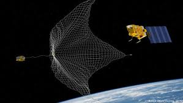
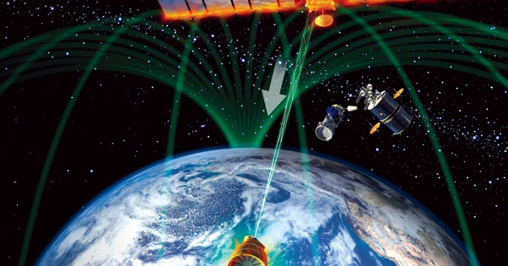
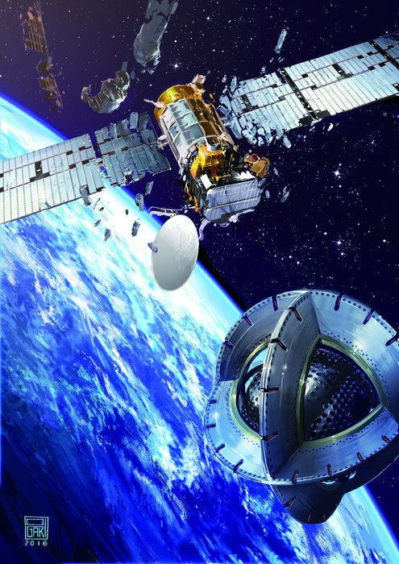

TYPES OF METHOD
1.ROBOTIC ARMS
In this method it has a chaser spacecraft with robotic arms that would capture the debris.With this method if the spacecraft is away then 2-3 metres then it will not capture the debris,so for capturing the target debris it should be within 2-3 metres. Then it use the mate chaser and the debris together into a single spacecraft.After that the system then would be brought to a lower orbits using the chaser's engines. Then the debris will naturally descend and eventually fall to Earth. Some of the debris will burn up on reentry through the atmosphere and Hopefully some will fall into the ocean.Robotic arms are ideal for capturing the large debris which are greater then 10cm and can be seen through high powerrful telescope.
2.TETHERED-NET
This method would involve deploying a net from the chaser spacecraft to capture debris.In this approach chaser should be close to 20-30 metres from debris to trap and eject the net towards them.In this the net would open up ,envelope the debris and tighten around it. The chaser would then tug the debris to lower orbit where, again, it would eventually fall to Earth as in the case of robotic arms.The Tethered nets are ideal for debris which are in the range of 1-2cm and are not properly seen by high powerful telescope.

3.LASER BROOM
Laser boom method uses the groung-based laser to ablate the front of the debris, producing the rocket like thrust which slows the object.Within this continued application debris would fall enough to be influenced by atmospheric drag. Although a test-bed device was scheduled to launch on a Space Shuttle in 2003, international agreements banning powerful laser testing in orbit limited its use to measurements.Laser destroy the debris with their powerful laser beam . Also,it indicates that firing a laser beam at a piece of space junk could impart an impulse of 1 mm per second, and keeping the laser on the debris for a few hours per day could alter its course by 200 m per day.

4.ELECTRO MAGNET
The idea of using magnetic space tugs. Not only can we use the power of magnets again and again, but their effectiveness would be both swift and efficient.The idea takes advantage of a special device onboard most satellites called a magnetorquer, which is a strong electromagnet that uses the Earth’s magnetic field to help it stay aligned with the planet properly. Since the external materials of most space junk is non-magnetic, the magnetorquer could serve as a viable magnetic target for such a magnetic tug concept.It could be effective on influencing space junk anywhere from 10-15 meters away from the magnetic tug spacecraft. Also,it is effective for capturing very small debris that are generally smaller than 1cm exist through their strong electro magnet .
